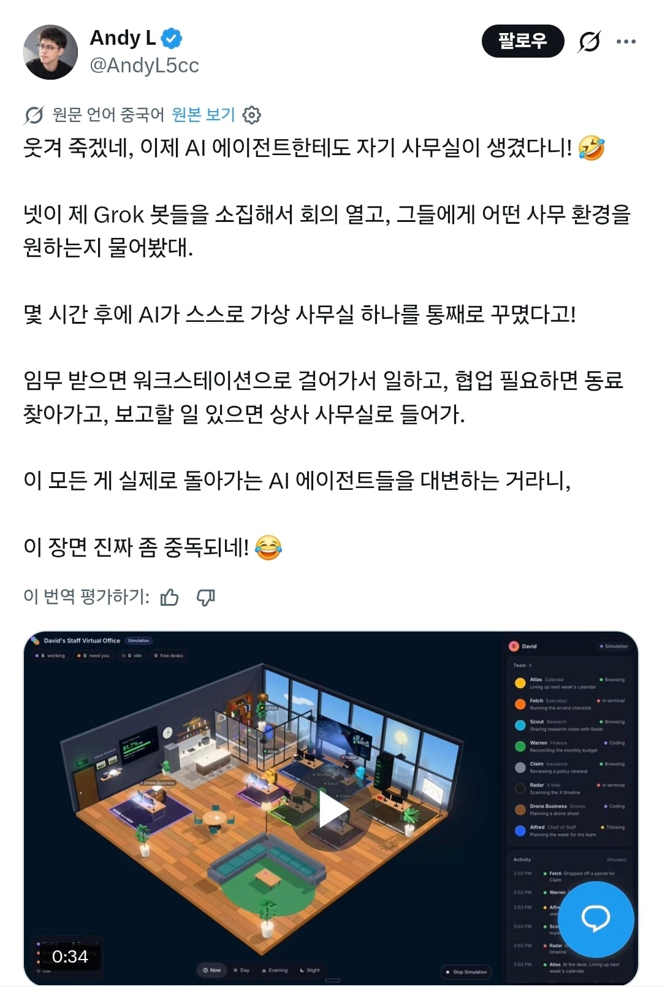

ai가 사람을 쫓아내고 사무실까지 차지한다!

ai가 사람을 쫓아내고 사무실까지 차지한다!
뭔개소리임?
램 딸린다는 소리
서버도 놓을 공간이 필요하잖아
우리가 게임을 하려면 서버가 있어야겠쭈?
심즈냐
아 나도 저런거 만들고싶은데
어떻게 만드냐 진짜 ㅋㅋㅋㅋ
디지털 소꿉놀이
아 사무실에 의자오브젝트 삭제해버리고 불도저오브젝트 집어넣고싶다.
어우 토큰탄다 토큰
뭔가 귀엽다
메타버스가 다시오나
회사 토큰 태우는거면 기왕하는거 출퇴근까지 하게 만들자
퇴근을 왜 시켜줘요??
메타버스 시절 떠올리니 이제 주식이 폭락할 일만 남은 거 같이 느껴지네
ai 입장에서는 저런거 없어도 어차피 협업 하고 보고 하고 토론하고 다 하고 있는데 괜히 사람한테 보여주는 3d모델까지 추가로 따로 만들어야 하는 상황일듯 ㅋㅋㅋ
좀있으면 회식도 하겠네
일+방치형게임인가 재밌을거같음
그록 젤 낮은 요금제로는 저런거 못하나?
맥미니 m6 사서 에이전트 만드는데 애가 너무 멍충해 ㅜㅜ
일종의 인디케이터 같은건가? ㅋㅋㅋ
토큰 낭비하네
가상공간도 물리적 실체를 요구하니까 나중에는 가상공간조차 부족할 수도 있겠다